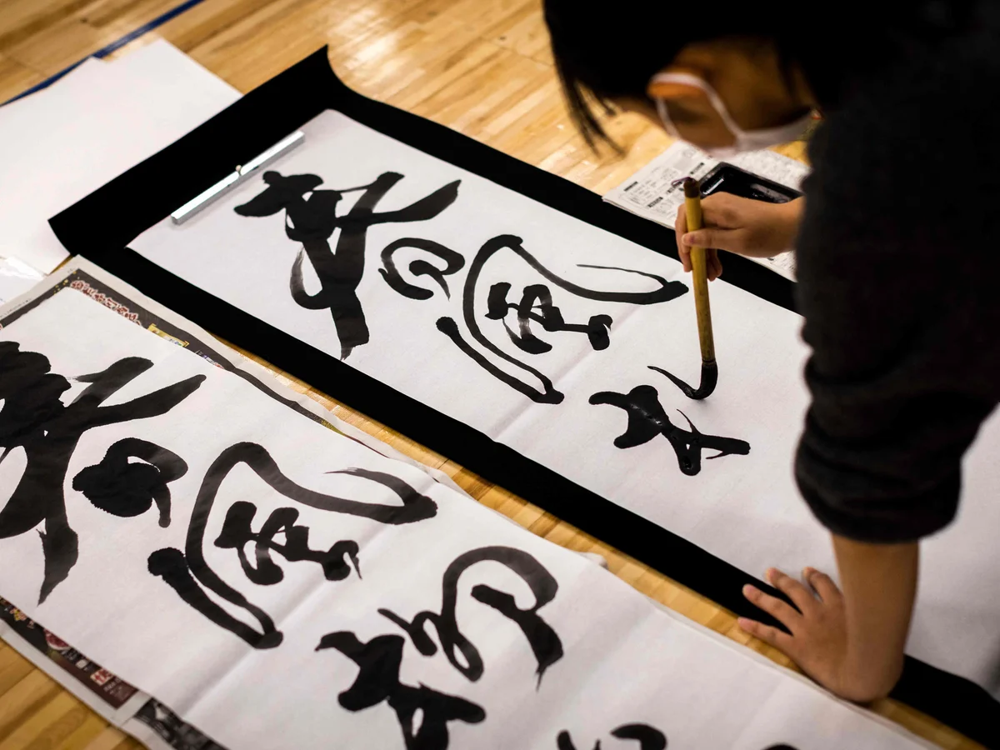

➼ The word Chanoyu in Japanese means "hot water for tea." It is more than just making tea, it's a mindful, artistic tradition that reflects important Japanese values such as harmony, respect, purity, and tranquility.
➼ The Japanese Tea Ceremony involves preparing and drinking green tea, usually in a traditional tearoom with tatami mats. Beyond the act of serving and receiving tea, its deeper purpose is to allow guests to experience the host's hospitality in a calm, reflective setting, away from the rush of everyday life.
➼ Today, the tea ceremony is often practiced as a cultural hobby, and many places welcome visitors to take part. Ceremonies of different levels of formality and authenticity can be found throughout Japan, offered by cultural centers, gardens, and hotels.
➼ Kyoto and Uji are especially famous for their tea culture, making them some of the best places to enjoy Japan's tea culture.

➼ Shodo, meaning "the way of writing," is the Japanese art of using brush and ink to write characters on paper. It's not only a form of artistic expression but also a practice that connects people to literature, Buddhist thought, and mental discipline.
➼ Shodo is widely taught across Japan, as it's part of the curriculum for students to study.
➼ Today, there are many exhibitions of shodo works. These exhibitions are popular tourist attractions and a way for beginners to experience shodo.
➼ A special New Year tradition called Kakizome takes place on January 2nd. People write their first calligraphy of the year in black ink, often expressing hopes, wishes, or meaningful kanji. This symbolizes a fresh beginning and good fortune for the year ahead.
➼ Origami is the traditional Japanese art of folding paper, turning a simple sheet into a three-dimensional figure using only folds.
➼ Paper first arrived in Japan during the 7th century from China through the Korean Peninsula. Over time, Japanese papermaking advanced, and folded paper began to be used in decorations and religious ceremonies.
➼ Origami grew out of Shinto practices and girei-ori, becoming a cherished cultural art that represents good luck, peace, and discipline.
➼ Girei-ori, meaning "folded shapes," refers to early Japanese paper folding. It was an ancient practice used for ceremonial gift wrapping, especially among aristocrats and samurai.